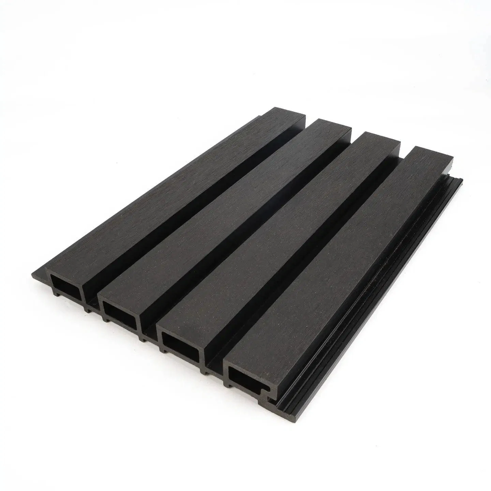

Producto realWPC exterior
Panel WPC exterior Negra
Marca Vita DekoCódigo VD-25
Panel de WPC símil madera para revestir fachadas y sectores exteriores, compuesto por PVC y fibra de madera. El proveedor informa resistencia a la humedad y superficie con protección UV. El catálogo describe colocación mediante encastre con fijación oculta y señala la necesidad de estructura nivelada, ventilación posterior y juntas de dilatación según la longitud del paño.
- Diseño / color
- Negra
- Material
- WPC: PVC y fibra de madera
- Formato
- 219 × 2900 mm
- Espesor
- 26 mm
- Peso informado
- 3 kg por metro lineal (web del proveedor)
- Uso
- Exterior decorativo
- Protección informada
- Resistencia a humedad y rayos UV, según proveedor
- Fijación
- Sistema de encastre y clips ocultos, según catálogo
- Recomendación de colocación
- Prever ventilación posterior y juntas de dilatación; verificar instrucciones de la partida
Disponibilidad FORMA: Consultar disponibilidad
Consultar precio
Consultar por WhatsAppConfirmamos precio, disponibilidad y entrega antes de cerrar el pedido.
Documentación técnica
MÁS OPCIONES